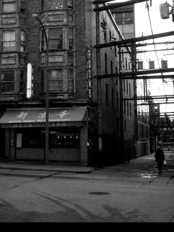

Essay
From the archive
Lions’ Gate
A 1 June 2024 note named a L.T. Drifta cut after the bridge. The current artist page does not list the title.
- format
- Essay
- date
- Jun 1, 2024
- author
- CJ Archer
- places
- Vancouver
- artists
- L.T. Drifta
- words
- 756 words · 3 min
- catalogue
- CC001
- listen
- L.T. Drifta
Lions Gate Bridge is a real bridge. It crosses Burrard Inlet into Vancouver from the north, and it is one of the ordinary ways the city continues after dark. On 1 June 2024 Night Shift published a note that treated the name as a L.T. Drifta track: a cut for the moment you meant to go home and did not, “water under,” email unfinished, the night still open. The note linked to his artist page and to the signing piece. It did not link to a release, and the site does not have a Lions’ Gate release page now.
The artist page, as it stands, is explicit about scope. Seven titles. If Ya Want, Nia Archives - Get Me Down (Molly's Hazy Jungle Edit), Three 4 Zone, Lakeshore West 23:55, Summer Madness, Classic Jazz, Champion Sound. Catalogue numbers CC021, CC020, CC014, CC008, CC006, CC003, CC001. No Lions’ Gate. A zine that keeps a review of a record its own label no longer lists has two honest options. It can delete the memory, which is how archives get tidy and false. Or it can say what the page said, date it, and say what the artist page says now. This is the second option. The 2024 note is a document of an intention or of a title that circulated inside the desk. It is not a document of a record you can buy.
The bridge, stripped of the track we cannot verify, is still a useful piece of local geography for a label that keeps tripping over its own place-names. Cumberland, where Club Copy’s Bandcamp says the label lives and where L.T. Drifta’s page says he lives, is on Vancouver Island. Vancouver is across the Strait of Georgia. Lions Gate is a Vancouver bridge, not an Island one. Naming a piece of music after it, in a note published from a label with an Island address, is a way of pointing at the city as the place the night goes, not as the place the artist is from. That reading was available in 2024 and it did not require the track to be mystical. It required the track to exist. Without the track, the reading is about the note, not about the music. The desk wanted a local image with movement in it, and it reached for the bridge commuters already use as a shorthand for staying out.
There is a pattern here, and any jungle is the other half of it. Two L.T. Drifta titles got Night Shift reviews and then did not appear among the seven titles the artist page now calls the catalogue. A third absence is the beat-tape note attached to CJ Archer. Small labels revise. They pull records, they rename projects, they decide a white-label experiment is not part of the story they want a new listener to enter through. Revision is allowed. Pretending the earlier page was never published is not, because the URL still resolves. Anyone who bookmarked the June 2024 piece can still land on it. The correction belongs on the piece.
What remains worth saying about Lions Gate, the bridge, in a music magazine is modest. Cities keep a few pieces of infrastructure that double as emotional punctuation. A bridge at night is one of them, in Vancouver as in any city that has to be crossed to get to the late room or away from it. Electronic music has named itself after roads, lines, and junctions for decades because the music is often about duration: how long you are willing to stay in transit. A label based on an island, releasing music that its own album copy sometimes sets in “Vancouver late hours,” is going to keep feeling that crossing. The feeling is not a single. The single, if it was one, is not in the seven.
Readers who want L.T. Drifta’s Club Copy music have a better door. If Ya Want on 21 October 2026. Get Me Down on 19 October 2026. Champion Sound on 9 July 2024 by the Bandcamp date. Classic Jazz and Summer Madness after it. Lakeshore West 23:55 on the site and not on his Bandcamp. Three 4 Zone on 18 October 2026. Those are the records. The bridge can go back to being a bridge. The note can go back to being a note from the first summer of the magazine, when the desk was faster than the catalogue and the catalogue, sensibly, did not follow every title the desk got excited about.